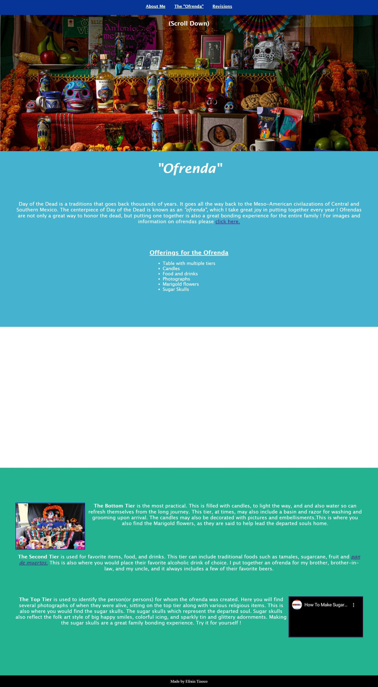
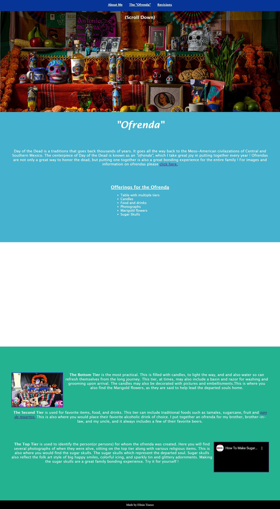

Revisions
Feedback recieved
 
For the feedback, I asked two of co-workers, Jose Gonzalez and Nicole Robinson, if they could review the first draft of my website and provide me feedback.
They are both also Superviors in the CSC Department at Ford Credit, and I have worked with them for over 15 years each.
We have worked together on several different projects and we have always been able to be open and honest with each other,
so their feedback is something I truly value.

For the feedback, I asked two of co-workers, Jose Gonzalez and Nicole Robinson, if they could review the first draft of my website and provide me feedback.
They are both also Superviors in the CSC Department at Ford Credit, and I have worked with them for over 15 years each.
We have worked together on several different projects and we have always been able to be open and honest with each other,
so their feedback is something I truly value.
{kind=link}
If you click the image above, you will see what my website looked like before revisions.
Suggestions made
- Font was very plain and should be changed
- Text looked sloppy right up against the background
- Images and videos were up against text
- Video and images looked out of place when off to the side
- Content is difficult to read
{kind=link}